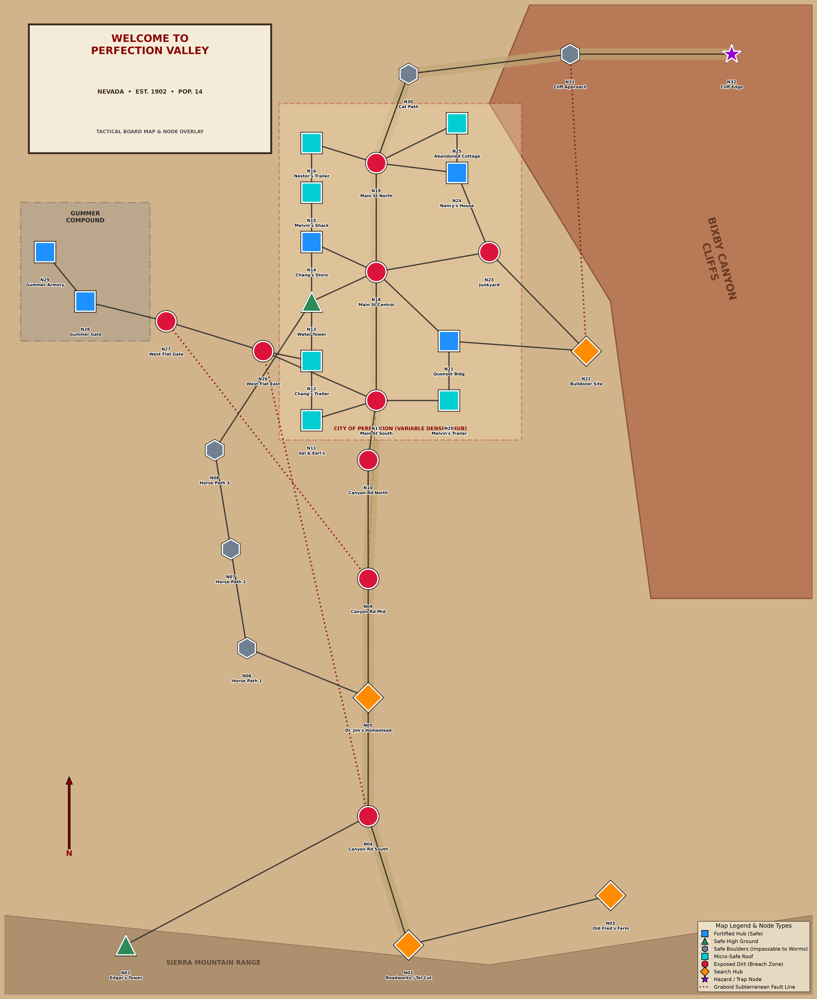

Cooperative, solo-friendly, 1–4 players, 60–90 minutes. Run Val, Earl, Rhonda and Burt through fourteen rounds in Perfection. Every action makes noise. Noise brings the Graboids up. Finish the essential work, keep everyone alive, and get out.
Everything currently designed for the game, consolidated for a physical playtest. The Core rules (Part 3) are the ruleset enforced by the digital prototype (js/engine.js) transplanted onto the 32-node valley board. The Modules (Part 4) are design proposals merged from the Gemini movement spec; they are untested and are what the playtest is meant to judge. Part 6 is the test protocol.
Source of truth for cards: js/data.js. Board: scripts/valley_network.py. Design docs: docs/rules-valley.md, docs/valley-engine-checklist.md. Pack version: .
Appendices
| Pages | Paper | Notes |
|---|---|---|
| Cover, Parts 1–6 | Plain, duplex | Rules text is two-column and reads front-to-back. Keep Part 3 and Appendix F at the table. |
| Map page (Part 1) | Single sheet, highest quality | Letter or A4. For a larger board print docs/Perfection_Valley_Full_Board_Map.png at 11×17 / A3 (it is 300 DPI at 18×22 in). |
| Appendices B–E | Card stock or plain + sleeves | Poker size, 3×3 per page, cut on dashed lines. Single-sided. |
| Appendix A, F | Plain | One character sheet per player. Print two copies of the round log. |
Designed for US Letter; scales to A4 with "fit to page". Total: 31 pages including cards.

North is up on the compass. Node IDs N01–N32 match the gazetteer on the next page. The dashed red box marks the town, drawn at an exaggerated scale so the lots are playable.
| Symbol | Terrain | Humans | Graboids |
|---|---|---|---|
| Red circle | Exposed Dirt | Open ground. Full risk. Roads marked N+ are loud (+1 Noise, see gazetteer). | Free travel. May surface and attack here. |
| Cyan square | Micro-Safe Roof | Trailer or small house. Holds 1–2 people. Protects once (Compromised), then Unsafe. | Cannot burst through the floor on the first try. Can undermine. |
| Blue square | Fortified Hub | Big building. Any number of people. Search hub. Protects once (Core) or takes 3 Erosion (Module M3). | Structural attack only. |
| Grey hexagon | Safe Boulders | Pole-vault rocks. Slow but safe: 1 node per step, cannot Run through. | Impassable. Never surfaces here; a surfaced model cannot enter. |
| Green triangle | Safe High Ground | Tower. One person per ladder step. Cannot be grabbed while up. | Impassable. Open ground below becomes Unsafe when tested. |
| Orange diamond | Search Hub | Objective and loot site. Search rating 2–4. Treated as Exposed Dirt for safety unless noted. | Free travel. |
| Purple star | Hazard / Trap | Cliff Edge. Bait ground for the stampede gambit. Loud (+1). | A Graboid that enters N32 falls. Remove it (Module M4). |
| Solid black line | Route | Walkable connection. One step per node. | Surfaced models move along routes too. |
| Dotted red line | Fault line | Not walkable. | Underground shortcut (N04↔N26, N09↔N27, N22↔N31). Matters in Module M1. |
Underground Graboids are tracked by sector, not node. A sector's noise is the sum of lingering noise on its nodes.
N04 Canyon Rd South ↔ N26 West Flat East · N09 Canyon Rd Mid ↔ N27 West Flat Gate · N22 Bulldozer Site ↔ N31 Cliff Approach. In Core play these are cosmetic (sectors are already adjacent). In Module M1 a Graboid may transit a fault line as one step.
Boulder and tower nodes are always safe from surfacing. Find the Safe Ground (objective) additionally reveals the Junkyard foundations (N23) as Solid Rock.
Nodes marked N+1 in the gazetteer add 1 Noise to any action there except a careful Move. Metal and the cliff road carry sound.
S = Search rating (added to Search rolls). N+ = loud ground. Legacy ID is the name used inside the engine and on some calamity cards; see the translation table in Appendix C.
Val → Earl → Rhonda → Burt, every round. In a group game each player owns a character; solo, one player runs all four. Discuss openly — the game is fully cooperative and noise is a shared budget, so table talk is the point.
Target: 14 rounds in 60–90 minutes. Rounds 1–3 should take under 5 minutes each.
Win: every drawn Essential objective is complete and, from round 10 onward, a player calls Evacuate with nobody Grabbed or dead. You also win if the Essentials are done when round 14 ends.
Lose: any survivor is Dragged (caught while Grabbed) or bleeds out from Critical; or round 14 ends with an Essential unfinished or failed.
Each character has 2 actions (1 if Injured, Pinned or Grabbed; 0 if Critical). A Grabbed character's only action is Struggle. Unused actions are lost.
Every action costs at least 1 Noise, placed on the node where it happens and added to the round total. Exceptions: Rhonda's Don't Move, and spending a Quiet Move token.
| Action | Noise | Rule |
|---|---|---|
| Move carefully | +1 | 1 node. Ignores loud ground and Shaken. |
| Move | +1 | Up to Movement nodes along routes. Shaken: +1. |
| Run | +2 | Up to Movement+1 nodes. Not through boulders. Shaken: +1. |
| Quiet Move | 0 | Spend a token. Move as above. |
| Search | +1 | d6 + Search + node S ≥ 9 (+1 to the target per earlier success here). Success: draw an item to the shared supply. |
| Work | max(1, printed) | On the objective's node. Tick 1 Work. Complete at the printed Work. |
| Diversion | +3 | Place all 3 on an adjacent node instead of your own. |
| Fight | +3 (+2 heavy) | Surfaced Graboid on your node. d6 + Combat ≥ 8 = 1 wound. On a miss, it attacks you. |
| Rescue | +2 | Share the node. Spend a Rescue token. Pull them one node clear; grip broken. You become Shaken. |
| Struggle | +1 | Grabbed only. Pull yourself one node clear; grip broken. Shaken. |
| Aid | +1 | Share the node. Spend a Medkit: Critical→Injured or Injured→Healthy. Or help up a Pinned character (no Medkit). |
| Use item / Rig | floor 1 | See Appendix D. A rig spends two specific items as one action. |
| Stay quiet | +1 | End your turn. Remaining actions lost. |
| Evacuate | — | Round 10+. All Essentials passed. Nobody Grabbed or dead. Win. |
Loud ground. On an N+1 node every action except a careful Move costs +1 Noise.
Blocked routes cannot be walked. Unsafe nodes give no protection. Inaccessible nodes cannot be entered.
After the four turns, read the round total.
| Total | Response | Graboid phase effect |
|---|---|---|
| 0–8 | Quiet | No underground movement. Hunt still ticks. |
| 9–11 | Movement | Each underground worm shifts one sector toward the loudest sector. |
| 12–14 | Hunting | Movement, and every underground worm +1 Hunt before the tick. |
| 15–19 | Feeding Frenzy | Hunting, then every worm activates a second time. |
| 20+ | Stampede | Frenzy, and a fourth Graboid enters an empty sector at Hunt 1. |
Calamity severity uses the same total: Quiet 0–8 · Disturbed 9–14 · Frenzy 15+. A full careful round for four people is about 8, so Quiet means "do less".
Resolve each Graboid in ID order. Underground tokens first use the band, then tick Hunt. Surfaced models chase.
Surfacing ambush. If anyone is on the burst node: on Exposed Dirt or a Search Hub, the most vulnerable person there (Grabbed, then Threatened, then Injured, then Healthy) is caught (see Encounter). In a building the walls hold once — mark it Compromised, everyone inside is Shaken. A Compromised building that is hit again becomes Unsafe and its occupants are caught. On a tower nobody is caught; the ground beneath becomes Unsafe.
Tripwire Bait overrides the burst node and skips the ambush.
Being caught by a worm escalates one step on that worm's track:
A different worm catching you starts its own track: you are Threatened by it instead.
Attacks happen when you walk onto a surfaced worm's node, miss a Fight, or Compromised/Unsafe cover fails. Roll d6:
| d6 | Result |
|---|---|
| 1–2 | Miss. Shaken. |
| 3 | Knockdown. Injured, Shaken. |
| 4 | Pinned. Injured, Threatened. Cannot move until helped up (Aid) or pulled clear. |
| 5–6 | Grabbed. |
If already Threatened by that worm: 4+ is Grabbed. If already Grabbed: no roll, Dragged. Burt's Prepared for Anything: once per round, discard one kit card to cancel an attack or breach at his node.
Healthy → Injured → Critical → Dead. Injured: 1 action. Critical: 0 actions, a 2-round timer, then dead unless Aided with a Medkit. Val is Fragile: her second serious hit takes her straight to Critical. Shaken is separate: +1 Noise on any Move or Run that is not careful. Earl's Keep Moving clears Shaken from a friend.
2 wounds. It dies, the model is removed, and +6 Noise lands on that node immediately. Everyone Threatened or Grabbed by it is released. Aggression +1 (all future Hunt ticks are one higher). The token returns underground in a random other sector at Hunt 0 later — the valley does not run out of worms.
Draw 3 Essential, 2 Optional, 1 Character at setup. Work them on the printed node. Each Work action ticks 1; the card is passed at its Work value and its Pass text applies at once. A card fails only when a calamity or its own text says so (Urgent, No Signal, Perfection Falls); then its Fail text applies. Failure is never an instant loss — it changes the board.
Radio Parts count as +1 Work on the radio or loader objective at their node.
Search: d6 + Search + node S ≥ 9. Each success at a node raises that node's target by 1 for the rest of the game. Val may reroll once per round (Luck); if the reroll also fails, +1 Noise. Success draws the top item card into the shared supply; anyone anywhere may use supply items on their turn.
Items are minor alone. Rigs spend two named items in one action for a big effect. Both are listed on the cards in Appendix D. The signature play is Tripwire Bait: you choose where the next worm surfaces and it arrives with no ambush.
Stats are Movement / Nerve / Search / Combat. Each character has passives and one Signature Moment (once per game). Full text in Appendix A. Nerve is printed for future rules and is not used in Core.
| Character | M/N/S/C | Start | Weakness |
|---|
Rhonda's Seismologist: the first time the round total reaches the Noise Limit (starts 6, drops by 1 per Graboid killed, minimum 4) she may look at the top calamity and either leave it or bury it at the bottom. Once per round. She cannot bury while Injured.
Earl Knows When to Run: once per round, after another character makes noise, Earl may move 1 node toward that node for free.
Draw the top card on rounds 4, 7, 10, 12, 14, after the Graboid phase. The stack is ordered by act, so round 4 is Act I, rounds 7 and 10 Act II, round 12 Act III and round 14 is #30 Get Out of Perfection. Read the paragraph matching the round's noise band. Cards name town locations; use the translation table in Appendix C for valley node IDs.
Desperation and Aggression are markers some cards raise. Desperation is a story counter for now (it has no rule effect in Core). Aggression adds to every Hunt tick.
Some cards place a Tremor marker on a node. Rhonda's I Know Where It Is lets her spend an action at that node or in its sector to reveal any Graboid there (sector, Hunt, or surfaced node). Tremors are information, not danger.
Each module replaces or adds a rule. Play Core first. Add one module per session unless the protocol says otherwise. Modules M1–M5 come from the Gemini movement spec; variants V1–V3 come from issues found in the digital prototype.
Underground tokens sit on a node, hidden under a face-down marker (players may peek only via Rhonda or items). Each Graboid phase:
Tests: do players count hops and plan? Is the hidden token workable without an app?
When a single action puts 3 or more Noise on a node (Run, Diversion, Fight, rigs), also place noise on neighbours: −1 per hop until 0. Spillover through boulder or tower nodes is blocked. The round total includes spillover cubes.
Tests: does clustering feel dangerous? Is the cube count manageable?
Buildings take Erosion tokens instead of a one-way Compromised flag. Each surfacing or attack under a Micro-Safe Roof or Fortified Hub adds 1 Erosion; occupants roll the attack table at −1 (Roof) or are safe (Hub) while Erosion is below 3. At 3 Erosion the building collapses: it becomes Exposed Dirt, everyone inside is Injured and caught. Rebuilding is not possible; Field Generator does not clear Erosion.
Tests: is a siege in Chang's Store tense over several rounds, or just slow?
Semi-Truck Escape. Two new Key Items shuffle into the item deck: Truck Battery and Starter Motor (only drawn when searching at N22 or N23; redraw elsewhere). Carry both to N04 Canyon Rd South and spend 4 Work there (printed noise 3). Then Evacuate is legal from round 8, with everyone at N04 or adjacent, even if an Optional is unfinished — Essentials are still required.
Bixby Cliff Trick. A surfaced Graboid that chases onto N32 Cliff Edge falls and is removed permanently (no +6 Noise, no return). If every Graboid on the board is dead or fallen, and all survivors stand on Safe Boulders or Safe High Ground, you win immediately.
Tests: does anyone attempt them? Do they make Burt and the CAT matter?
Shuffle the 12 behaviour cards (Appendix E). Whenever the round total is Disturbed or higher, draw one after band movement and before Hunt ticks. Resolve the Seismic line first (a map mutation), then apply the AI line to every Graboid for this phase only. Discard after use.
Tests: too much admin? Do the mutations create memorable moments or just confusion?
A sector with 0 lingering noise gives −1 Hunt (minimum 0) instead of +1. This is what the design intended; the prototype currently ticks +1 in silence, which means all three worms surface at the end of round 1 regardless of play. Test both.
Surfacing under a building ignores cover: someone inside is caught immediately (the prototype does this). Core uses "walls hold once". Test which reads better.
Surfaced models chase 2 nodes on Hunting and above, 3 on Frenzy. Use if running away is too cheap.
Core rules, no modules. Objectives drawn: Get the Radio Working (N02), Secure a Heavy Vehicle (N22), Get Everyone to the Meeting Point (N14); Optional Gather Fuel (N12) and Save the Horses (N06); Character Rhonda — Something Doesn't Add Up (N07). Burt drafted Shotgun and Binoculars. Graboids: G1 sector D, G2 sector E, G3 sector B, all Hunt 1.
Val (M4). Move N14 → N18 → N21 Quonset (3 nodes, within Movement 4). +1 Noise at N21. Then Search at N21 (S3): d6 4 + Search 3 + 3 = 10 ≥ 9. Success — draws Radio Parts into the supply. +1 at N21. Val: 2 Noise.
Earl (M3). Move N14 → N18 → N21 to join Val (+1 at N21). Search N21 (target now 10 after Val's find): d6 3 + 2 + 3 = 8. Fail. +1 at N21. Earl and Val share a node, so both have +1 Nerve (no Core effect). Earl: 2 Noise. N21 now holds 4.
Rhonda (M3). Takes no Move, so Don't Move applies. Work on Something Doesn't Add Up at N07 (Work 1, printed noise 0 → floor 1 → Don't Move makes it 0). Complete: she reveals two worms — G1 is in D at Hunt 1, G3 is in B at Hunt 1. Second action: Search N07 (S1): d6 2 + 5 + 1 = 8. Fail, +1 at N07. Rhonda: 1 Noise.
Burt (M2). Move N29 → N28 → N27 (+1 at N27). Move carefully N27 → N26 (+1 at N26). Burt: 2 Noise.
G1 (D, Hunt 1). Quiet band: no sector move. Tick: D has 0 noise → +1. Hunt 2 → surfaces. Loudest node in D: N05, N22, N23 all at 0 — tie, roll d6 → N23 Junkyard. Nobody there. Model placed. Junkyard is loud ground, so anyone who works near it later will be heard.
G2 (E, Hunt 1). Tick +1 → Hunt 2 → surfaces. Sector E is N30, N31 (boulders — never) and N32 Cliff Edge. Model on N32. Nobody there.
G3 (B, Hunt 1). Tick: B has 4 → +1 → Hunt 2 → surfaces at the loudest node in B: N21 Quonset, where Val and Earl are standing. It is a building: the walls hold once. Mark N21 Compromised. Val and Earl are Shaken, not caught.
No calamity (round 1). Upkeep: node noise −1 (N21 → 3, the others → 0). Round noise → 0. Round marker → 2.
All three worms surfaced at the end of round 1 however quietly the table played — Core Hunt always ticks at least +1 from Hunt 1. This is the first thing the playtest should judge (Hypothesis H4, Variant V1). Also: Val and Earl are now in a Compromised building sharing a node with a Graboid. If they are still there when G3 activates at the end of round 2, the walls fail and they are caught.
Options on the table: leave (G3 chases 1 node per round, so a 2-node Move opens a gap; a Run opens more but costs +2 +1 Shaken); Fight (Earl: d6 + 3 ≥ 8 needs a 5+, and a miss means an attack roll); or hold and search once more for a second Radio Part before running. Burt is two rounds away. The group chooses to leave: Val Runs N21 → N18 → N14 Chang's Store (+2 +1 Shaken = 3 at N14) and Earl Moves N21 → N20 → N17 (+1 +1 Shaken = 2 at N17). G3 will step toward the nearest of them at the end of the round.
Situation. Burt is on N17 Main St South heading for the CAT. G3 is surfaced on N18, adjacent. Burt has Shotgun and Binoculars, 2 actions, Healthy.
Burt, round 6. He cannot Fight yet — the worm must share his node. He could retreat, but he wants the shot, so he Stays quiet (+1) and lets it come. In the Graboid phase G3 chases N18 → N17 and catches Burt: Threatened by G3, Shaken.
Round 7, Burt action 1: Fight. Shotgun: Combat 5 + 2 = 7, d6 3 → 10 ≥ 8. 1 wound. Noise: 3 (Fight) + 2 (heavy) + 1 (Burt's weakness) = +6 at N17. Action 2: Move N17 → N26 (+1 +1 Shaken).
Graboid phase. Round total was 14 → Hunting. G3 chases 1 node: N17 → N26 and catches Burt again — same worm, already Threatened → GRABBED. Burt is Injured, Pinned, 1 action next round.
Round 8, Earl (who Knew When to Run toward Burt's shotgun noise last round and is now on N17): Move N17 → N26 (+1). Rescue: spend a Rescue token (3 left), +2 Noise, pull Burt one node clear to N27. Grip broken; Earl is Shaken. Burt (1 action): Move carefully N27 → N28 Gummer Gate (+1). G3 caught nobody this round: miss 1 of 2.
If Earl had not arrived, Burt's one action would have been Struggle (+1, pull himself clear, Shaken) — which also breaks the grip. The difference is the Rescue token and who ends up standing next to the worm.
The prototype has been simulated (~700 bot games) but never played by people at a table. Bots do not bluff, coordinate, or get scared. This protocol is built to answer questions simulation cannot.
| # | Hypothesis | Evidence that supports / refutes |
|---|---|---|
| H1 | Human tables win 40–60% under Core. | Win rate over ≥4 games. Below 30% or above 70% means retune before testing modules. |
| H2 | Players deliberately stay under 9 noise on some rounds and deliberately spend big on others. | Round log shows both bands. Table talk mentions the threshold. |
| H3 | Every game has at least one Rescue or Struggle. | Log column. Zero grabs = worms not threatening enough. |
| H4 | Round-1 mass surfacing (Core) feels wrong. | Immediate reaction; compare V1 session. |
| H5 | Boulder paths and towers are used as intended routes at least once per game. | Track nodes visited. If never, the terrain is decoration. |
| H6 | Sector tracking (Core) is easy but leads to worms piling onto one node under Movement+ bands. | Count rounds with 2+ worms in one sector or on one node. |
| H7 | Fight is chosen at least once per game when Burt is present. | If never, loud play has no payoff. |
| H8 | Act III calamities are reached in most games. | Games ending before round 12 mean the evacuate gate is too early or Essentials too cheap. |
| Session | Rules | Focus |
|---|---|---|
| A (×2) | Core only | Baseline. Learnability, pacing, H1–H4, H7, H8. |
| B | Core + V1 | Does Hunt cooling restore the quiet/loud choice? Compare first-surface round with A. |
| C | Core + V1 + M1 | Node-tracked worms. H5, H6. Time the Graboid phase. |
| D | C + M2 + M3 | Spillover and erosion. Component load; siege feel. |
| E | D + M4 | Do people go for the truck or the cliff? Does Burt matter more? |
| F | E + M5 | Behaviour deck. Admin cost vs memorable moments. |
If a session is a clear failure (a rule cannot be applied at the table, or the game is decided by round 4), stop, note why, and replay the same configuration with the obvious fix before moving on.
Use the round log (Appendix F). Columns:
These are already suspected. Confirm or dismiss them rather than rediscovering them.
| Outcome | Action |
|---|---|
| Win rate under 30% across Session A | Reduce Essential Work by 1 or start with 5 Rescue tokens before testing modules. |
| Win rate over 70% | Raise Essential Work or move the Evacuate gate to round 12. |
| Games end before round 10 by loss | Reduce chase to 1 node on all bands (already Core) and test V1 earlier. |
| Module adds more than 3 minutes per Graboid phase | Cut or simplify it. |
| A rule needs re-explaining in game 2 | Rewrite it; if still unclear in game 3, cut it. |
| A component is never touched in two games | Remove it from the pack. |
Deal 3 at setup, Burt keeps 2. Each card can be discarded once for Prepared for Anything. Heavy weapons add +2 Noise to a Fight; Burt's weakness adds +1 for any equipment use.
| Condition | Effect | Cleared by |
|---|---|---|
| Shaken | +1 Noise on Move or Run (not careful). | Earl's Keep Moving; a full round without moving (house rule if needed). |
| Injured | 1 action. Character-specific penalty (see sheet). | Aid with a Medkit. |
| Critical | 0 actions. 2-round timer → dead. | Aid with a Medkit → Injured. |
| Pinned | Cannot move. 1 action. | Aid (no Medkit) or being pulled clear. |
| Threatened (by worm X) | Next catch by X = Grabbed. | X submerges or dies; you are pulled clear. |
| Grabbed | Injured, Pinned, only Struggle. Next catch = dead. | Rescue, Struggle, Line Rescue, worm dies. |
Calamity and objective text was written for the 14-node town. On the valley board read these names as follows. Where a card blocks a route, block the listed valley route.
| Card says | Valley node | Card says | Valley node |
|---|---|---|---|
| Telephone Line / the radio | N02 Roadworks / Tel Cut | Chang's / Chang's Market / the store | N14 Chang's Store |
| Bixby Road / the highway | N32 Cliff Edge (valley exit) | Chang's Trailer / fuel | N12 Chang's Trailer |
| Horse Corral / the horses | N06 Horse Path 1 | Water Tower | N13 Water Tower |
| Rhonda's Camp / seismograph | N07 Horse Path 2 | Nestor's Trailer | N16 Nestor's Trailer |
| Junkyard / the Dump / workshop | N23 Junkyard | Nancy's House | N24 Nancy's House |
| Caterpillar / the loader / the CAT | N22 Bulldozer Site | Melvin's Place | N15 Melvin's Shack (or N20 Melvin's Trailer) |
| Burt's / Burt's house / the compound | N29 Gummer Armory | Jim & Megan's / the clinic | N05 Dr. Jim's Homestead |
| Route "Corral–Junkyard" | N06 ↔ N05 Dr. Jim's | Route "Dump–Bixby Road" | N30 Cat Path ↔ N19 Main St North |
| "one adjacent route" to Bixby Road | N32 ↔ N31 Cliff Approach | Sector C / "Burt's sector" | Sector C West Compound |
| Sector E / "south" | Sector E South Cliffs | Open ground beneath the Telephone Line | N04 Canyon Rd South |
Act I (#1–10) shuffled on top · Act II (#11–25) shuffled beneath · Act III (#26–29) shuffled beneath that · #30 Get Out of Perfection on the bottom. Rounds 4 → Act I, 7 and 10 → Act II, 12 → Act III, 14 → #30. Rhonda's Seismologist may bury a card; a buried card goes under #30 and is never drawn.
On #30, read "one round remains" as "the game ends at the end of round 14".
Game # ______ · Date ______ · Players ______ · Configuration (Core / V1 / M1–M5): ________________ · Start time ______
| Rd | Noise | Band | Loudest node | Surf. | Catch | Grab | Resc. | Wnd/Kill | Ess. done | Calamity / band | Time | Notes / table talk |
|---|
Result: Win / Loss · Round ______ · Reason ______________________________________________ · End time ______
Ratings 1–5 — Tension ___ Agency ___ Clarity ___ Tremors feel ___ Play again ___
Biggest single change for next game: ________________________________________________________________
Slide a marker per worm. Surface at 2. Note the sector (Core) or node (M1) in the box.
| Worm | Sector / node | 0 | 1 | 2 | 3 | Surfaced at | Misses | Wounds |
|---|---|---|---|---|---|---|---|---|
| G1 | ☐ ☐ | ☐ ☐ | ||||||
| G2 | ☐ ☐ | ☐ ☐ | ||||||
| G3 | ☐ ☐ | ☐ ☐ | ||||||
| G4 | ☐ ☐ | ☐ ☐ |
Add up the cubes per sector during the Graboid phase. Cross out as rounds pass.
| Round | A North Canyon | B Town Centre | C West Compound | D East Yard | E South Cliffs | Loudest |
|---|
| Rescue tokens | Medkits | Quiet Move | Fuel | Desperation | Aggression | Noise Limit |
|---|---|---|---|---|---|---|
| ☐ ☐ ☐ ☐ ☐ | ☐ ☐ ☐ ☐ ☐ | ☐ ☐ ☐ ☐ | ☐ ☐ ☐ ☐ ☐ | 0 1 2 3 4 5 | 0 1 2 3 | 6 5 4 |
Items in supply